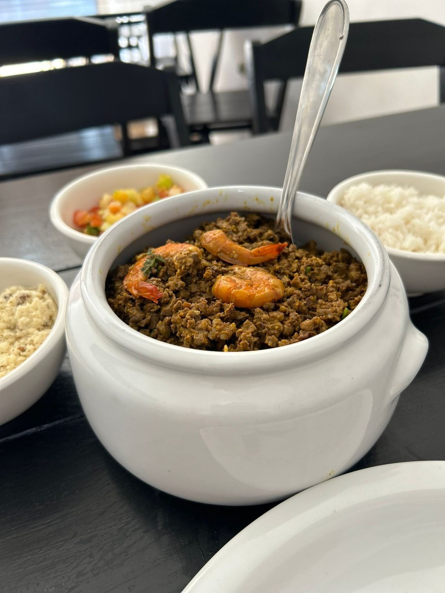

Início · A casa na Pituba
O Sabor da Zu na Pituba
R. Maranhão, 445, Pituba, Salvador, perto da Lagoa dos Patos. Almoço de terça a domingo, das 11h às 15h.
Endereço
R. Maranhão, 445 · Pituba
Salvador · BA · 41830-260Abrir no Google Maps
Perto da Lagoa dos Patos, segundo o Pituba 24 Horas.
Horário
Terça a domingo, das 11h às 15h
Horário da casa
Horário confirmado pela casa na ficha do Google. O buffet livre é de quinta a domingo.
O salão
Lugar de almoçar com a família
Na inauguração, o Pituba 24 Horas descreveu um “ambiente pensado para reunir família e amigos”. De quinta a domingo, o salão tem buffet livre; nos outros dias, o almoço segue pelo cardápio.

- Na ficha do Google, a casa se identifica como empresa de empreendedoras.
- Delivery e retirada no balcão, de terça a domingo.
Contato
Pelo WhatsApp da casa
Pedidos, encomendas e dúvidas: (71) 98536-8620. No Instagram, @sabordazusalvador.
Falar com a casaDúvidas frequentes
Perguntas comuns
Abre na segunda?
Não. A casa abre de terça a domingo, das 11h às 15h.
Tem estacionamento?
Não está publicado: confirme pelo WhatsApp.
A casa de Brotas ainda funciona?
O endereço atual publicado pela casa é o da Pituba. Na dúvida, confirme pelo WhatsApp.
Peça agora
Comida baiana de família, direto no seu WhatsApp.
Monte o pedido, mande a mensagem e combine entrega ou retirada com a casa, sem comissão de aplicativo.